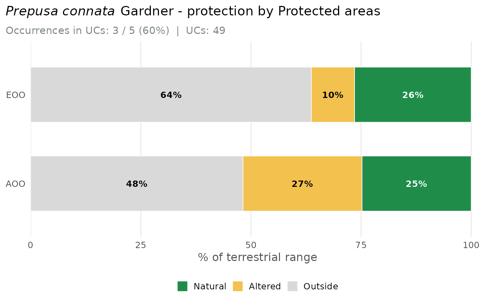

Protection chart (inside vs outside Protected areas) for EOO and AOO
Source:R/plot_protection.R
plot_protection.RdTwo horizontal stacked bars (EOO and AOO) showing the share of the range
inside federal Protected areas (Protected areas, UCs) versus outside, from
assess_species(..., protected = TRUE). When MapBiomas was also computed
(mapbiomas = TRUE), the inside-UC part is split into natural and
altered habitat, so the dark-green segment is the range that is natural
and protected. Layout mirrors plot_conversion: title,
one subtitle with the occurrence count, and a legend on the right.
Usage
plot_protection(assessment, species = NULL, lang = c("en", "pt"))Value
A ggplot object (ggplot2 available) or, in the base-graphics
fallback, invisibly the plotted percentage matrix (rows EOO/AOO).
See also
mas_plotly for the interactive version.
Examples
# \donttest{
occ <- read_occurrences(system.file("extdata", "example_occurrences.csv",
package = "mappingAS"))
res <- assess_species(occ, protected = TRUE, verbose = FALSE) # reads WDPA
#> although coordinates are longitude/latitude, st_intersection assumes that they
#> are planar
#> although coordinates are longitude/latitude, st_intersection assumes that they
#> are planar
#> although coordinates are longitude/latitude, st_intersection assumes that they
#> are planar
#> although coordinates are longitude/latitude, st_intersection assumes that they
#> are planar
#> although coordinates are longitude/latitude, st_intersection assumes that they
#> are planar
#> although coordinates are longitude/latitude, st_intersection assumes that they
#> are planar
plot_protection(res)

# }